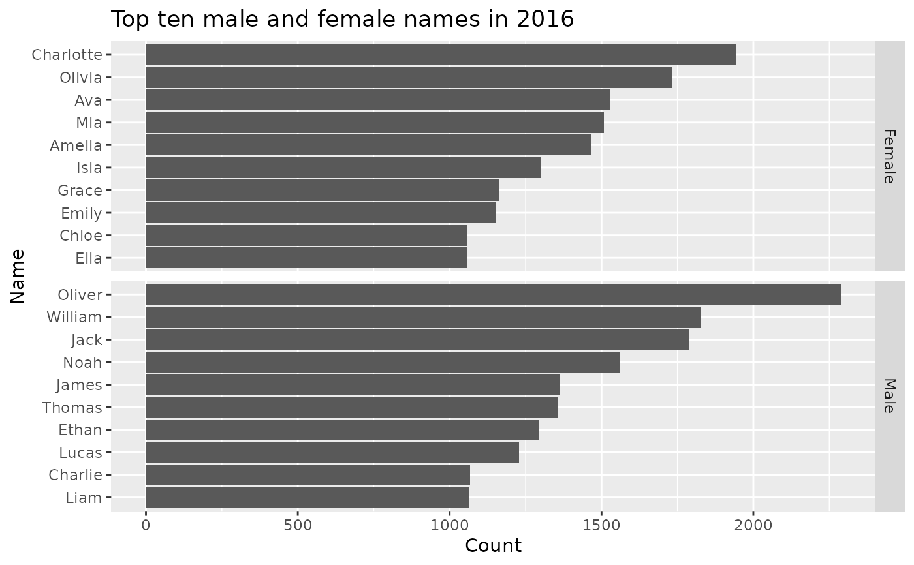

ozbabynames.RdThe ozbabynames package provides the data object `ozbabynames` containing popular Australian baby names by sex, state and year. The coverage is very uneven, with some states only providing very recent data, and some states only providing the top 50 or 100 names. The ACT do not provide counts, and so no ACT data are included. South Australia has by far the best data, with full coverage of all names back to 1944.
ozbabynames
tibble
Various state government websites
#> # A tibble: 6 x 5 #> name sex year count state #> <chr> <chr> <int> <int> <chr> #> 1 Charlotte Female 2017 577 New South Wales #> 2 Olivia Female 2017 550 New South Wales #> 3 Ava Female 2017 464 New South Wales #> 4 Amelia Female 2017 442 New South Wales #> 5 Mia Female 2017 418 New South Wales #> 6 Isla Female 2017 392 New South Wales#> #>#> #> #>#> #> #>ozbabynames %>% filter(year==2016) %>% group_by(sex,name) %>% summarise(count = sum(count)) %>% arrange(-count) %>% top_n(10) %>% ungroup() %>% ggplot(aes(x=reorder(name, count), y=count, group=sex)) + geom_bar(stat='identity') + facet_grid(sex ~ ., scales = "free_y") + coord_flip() + ylab("Count") + xlab("Name") + ggtitle("Top ten male and female names in 2016")#>#>